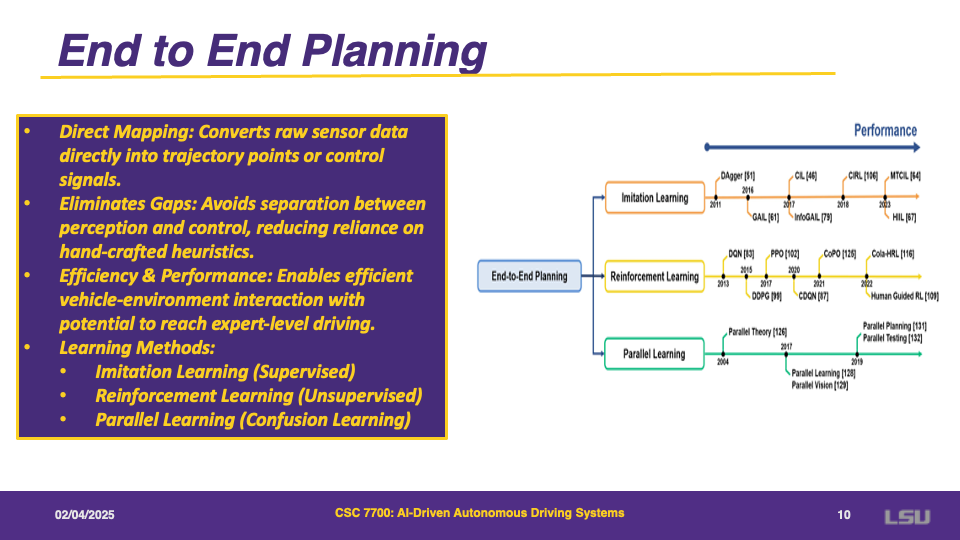
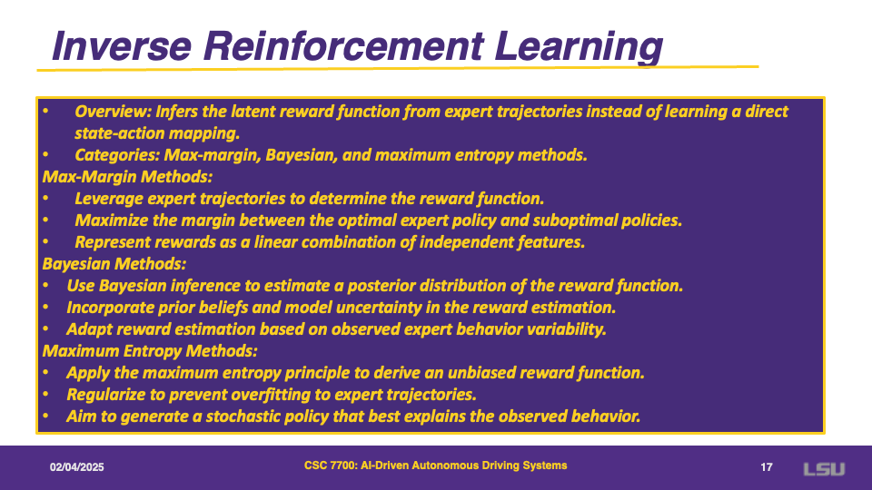

Motion Planning for Autonomous Driving: The State of the Art and Future Perspectives
Authors: Siyu Teng, Xuemin Hu, Peng Deng, Bai Li, Yuchen Li, Yunfeng Ai, Dongsheng Yang, Lingxi Li, Zhe Xuanyuan, Fenghua Zhu, Long Chen
Presentation by: Bassel Succar
Time of Presentation: 27th March 2025
Blog post by: Aleksandar Avdalovic
Link to Paper:
https://arxiv.org/abs/2303.09824v4
Summary of the Paper
This paper reviews and compares current motion planning methods for autonomous driving.
It discusses two main approaches: the pipeline planning method, which is modular and easy to interpret
but depends on manual rules and can be resource heavy, and the end-to-end planning method, which uses deep learning
for a unified solution yet struggles with explainability. The paper covers key techniques such as global route planning,
local behavior/trajectory planning, imitation learning, reinforcement learning, and parallel learning.
It also highlights the advantages and challenges of each approach, and offers insights into future research directions
for building more robust, safe, and efficient autonomous driving systems.
Slide 2: IVs: Opportunities & Challenges

Intelligent Vehicles (IVs) hold great promise for reducing accidents, easing traffic congestion, and making urban travel more convenient. Although there are successful test programs, broader deployment still faces challenges due to safety and reliability concerns.
IVs rely on multiple sensors to perceive the world, yet detecting and responding to complex real-world situations remains a hurdle. Overcoming these obstacles requires developing robust, adaptive planning methods that can handle diverse scenarios and ensure safe autonomous driving.
Slide 3: The Planning Methods
This slide highlights two major motion planning strategies for autonomous driving:
-
Pipeline Planning: Modular, rule-based, and highly interpretable, but it can be resource-intensive and depends heavily on manual tuning.
-
End-to-End Planning: Unified, learning-based, and robust in many scenarios, but less transparent and harder to debug.
In short, pipeline methods make it easier to pinpoint errors in specific modules, while end-to-end solutions can adapt more flexibly to complex tasks but may lack clear explanations for their decisions.
Slide 4: Pipeline Planning Methods
Pipeline planning is widely used in industry because it divides the autonomous driving process into separate modules—perception, localization, planning, and control. Each module tackles a specific sub-problem, which makes the system more transparent and easier to troubleshoot.
For instance, a global route planner provides a high-level path, and a local trajectory planner calculates a detailed set of waypoints for the vehicle to follow. Although this modular design allows for targeted improvements in each sub-module, it can also become complex, since each module relies on the accuracy of the others.
Slide 5: Global Route Planning
Global route planning is all about finding the most efficient path from a starting point to a destination in a complex network that may include millions of edges and nodes. This process seeks to identify a road-level route that minimizes costs such as travel time, while also taking into account factors like computational time, preprocessing needs, memory usage, and overall robustness. Two key algorithms play a central role here: Dijkstra’s Algorithm, which was one of the first methods to guarantee a minimal-cost route, and the A* Algorithm, which uses heuristic techniques to quickly narrow down the search space. These approaches form the backbone of modern intelligent transportation systems by significantly enhancing route efficiency.
Slide 6: Trajectory Route Planning (Part 1)
The output of this planning function should be a full trajectory rather than just a path. A trajectory explicitly accounts for how the vehicle moves over time and interacts with other traffic participants. If we only focus on a path, we might ignore the timing of events like merging or overtaking, which can lead to unsafe or inefficient maneuvers.
To handle this properly, we generally define the planning problem in mathematical terms, making sure the vehicle follows physical constraints, stays within drivable areas, and respects surrounding traffic. This approach helps ensure that the resulting motions are both feasible and safe.
Slide 7: Trajectory Route Planning (Part 2)
A common way to formalize this task is by minimizing a cost function over a certain time horizon. This cost function often balances multiple factors such as safety, comfort, efficiency, and adherence to road rules. We denote the vehicle’s state by z(t) and its control inputs by u(t), with the goal of finding z(t) and u(t) that minimize the overall cost while satisfying constraints like collision avoidance, velocity limits, and final target conditions.
By carefully designing this cost function and the associated constraints, trajectory planning methods can produce smooth, collision-free maneuvers that meet the requirements of real-world driving scenarios.
Slide 8: Trajectory Route Planning – Solution Strategy
Solving the optimal control problem (OCP) for trajectory planning is tough because there's usually no clean analytical solution. To handle this, researchers break the problem down into two manageable parts. The first part is identifying the grid of possible vehicle states, and the second part is generating motion primitives, which are short motion segments that can be combined to build a full trajectory. This divide-and-conquer strategy helps make the problem more practical for real-world autonomous driving systems.
Slide 9: State Grid Identification
State grid identification is the first step in simplifying trajectory planning. It converts the continuous range of possible vehicle states into a structured grid of discrete options. There are different strategies for doing this. One way is using graph-based search methods like A*, dynamic programming (DP), or hybrid A*, which look for possible connections between grid points. Another approach selects grids by optimizing cost functions using methods such as greedy algorithms or Markov Decision Processes (MDPs). A third technique reformulates the problem as a mathematical program and solves it using optimization techniques, with or without gradients. In practice, a mix of these strategies is often used to efficiently find good local paths.
Slide 10: Primitive Generation
Once the state grid is set, the next task is to generate motion segments, or primitives, that connect the points in the grid. These primitives can be built using different methods. Analytical approaches use predefined curves, like Dubins or Reeds-Shepp paths, or polynomial equations. Simulation-based methods generate primitives by simulating forward motion under specific controls. Interpolation-based techniques rely on splines or parameterized polynomials to ensure smooth transitions between states. Lastly, optimization-based methods solve smaller-scale control problems to generate transitions. Together, these primitives form the building blocks of a complete trajectory.
Slide 11: End-to-End Planning

End-to-end planning is a learning-based approach that skips traditional modular design by directly mapping raw sensor inputs to driving actions like steering or acceleration. This eliminates the need for manually crafted rules to connect perception and control, making the system more efficient and potentially capable of expert-level driving performance.
Key techniques used in end-to-end planning include imitation learning, reinforcement learning, and parallel learning. Each of these focuses on training the system using data or interaction feedback to improve its decision-making abilities in complex, real-world environments.
Slide 12: Imitation Learning
Imitation learning aims to teach a model how to drive by learning from expert demonstrations. The model is trained on a dataset containing state-action pairs—basically showing the system what to do in different situations. The goal is to learn a policy that mimics expert behavior as closely as possible.
There are several approaches under this umbrella: behavioral cloning, which copies the expert’s actions directly; direct policy learning, where the model learns to improve its own behavior; and inverse reinforcement learning, which tries to uncover the hidden goals behind expert decisions.
Slide 13: Behavioral Cloning
Behavioral cloning is a technique where a model learns to imitate expert drivers by training on examples of their behavior. One early approach by Bojarski et al. used a convolutional neural network (CNN) trained on front-facing camera images to predict steering angles. However, this setup only controlled lateral movement and didn’t handle acceleration or braking, limiting its use to simpler driving tasks.
Later work by Codevilla et al. improved on this by introducing a system that also considered vehicle speed and high-level navigation commands, making the model capable of both lateral and longitudinal control. More advanced systems now use richer inputs like video, LiDAR, HD maps, and other signals to generate safer, more interpretable driving decisions in busy urban settings.
Slide 14: Pros vs Cons of Behavioral Cloning
Behavioral cloning has some clear advantages. It directly imitates expert drivers, making training fast and simple. The feedback loop is quick—once trained, the model can replicate expert actions without needing complex reasoning or extra processing.
However, it also has major limitations. The training data only covers situations the expert encountered, which can cause the model to struggle when facing unfamiliar scenarios. It often fails to recover well from mistakes or edge cases. Additionally, the decision-making process can be hard to interpret, making it unclear why the model behaves a certain way. Some newer methods try to fix this by producing intermediate maps that help explain the model’s decisions.
Slide 15: Direct Policy Learning (DPL)
Direct Policy Learning builds on behavioral cloning by helping the model not only imitate but also recover from mistakes. It uses expert trajectories to provide corrective feedback, guiding the agent through situations where pure imitation would fail. This makes DPL more robust, especially in complex or unpredictable environments where error correction is important.
Slide 16: DPL Techniques
One of the most well-known DPL techniques is the DAgger (Dataset Aggregation) approach. Instead of only learning from expert data, the model gathers its own experience and compares it with what an expert would have done. This process helps close the gap between what the model knows and what it should do, making the learning more data-efficient.
However, DAgger has its own challenges. The model may still struggle if there’s a big mismatch between what it learns from the available data and what it’s expected to do in real-world situations. Despite this, the method remains a useful way to improve learning in scenarios where behavioral cloning falls short.
Slide 17: DPL Techniques – DAgger by Coaching
DAgger by coaching adds another layer to the traditional DAgger approach by introducing a coach figure. Instead of jumping straight to learning from expert behavior, the coach first demonstrates simpler, easier-to-learn actions for the model. Over time, the coach nudges the learner closer to expert-level decisions. Eventually, the coach itself becomes more like the expert, creating a smoother bridge between what the learner can handle and the complexity of expert behavior.
Slide 18: Inverse Reinforcement Learning

Inverse Reinforcement Learning (IRL) aims to uncover the hidden reward functions that drive expert behavior, rather than just copying actions. This allows the system to better understand why certain decisions are made. There are different approaches to IRL: max-margin methods focus on creating a clear boundary between expert and non-expert policies, Bayesian methods introduce prior beliefs and account for uncertainty, and maximum entropy methods avoid bias by encouraging diverse behaviors. All of these approaches help the agent generalize better by learning the goals behind actions, not just the actions themselves.
Slide 19: Reinforcement Learning
Reinforcement Learning (RL) relies on Markov Decision Processes (MDPs) to frame the decision-making problem for autonomous vehicles. There are two main types of RL approaches used in this context. Value-based RL focuses on estimating how good certain actions are using methods like Q-Learning and deep Q-networks. These methods help the vehicle choose optimal maneuvers based on simulations or sensory input. Policy-based RL, on the other hand, directly learns the best policy for choosing actions, which is better suited for continuous action spaces such as steering angles. Algorithms like PPO and DDPG are popular in this category.
Slide 20: Reinforcement Learning Cont.
In real-world environments, vehicles often interact with other autonomous or human-driven agents. Multi-agent reinforcement learning addresses this by allowing multiple agents to learn and act together. Unlike single-agent systems that rely on fixed rules for others, multi-agent approaches enable flexible, dynamic responses. They often use methods like decentralized partially observable MDPs (DEC-POMDP), along with techniques like parameter sharing and graph-based communication. While this leads to better coordination and generalization in multi-vehicle settings, it also makes training harder, since the state space grows rapidly as more agents are added.
Slide 21: Parallel Learning
Parallel learning is introduced to overcome some common challenges in planning methods. Traditional pipeline approaches often rely on handcrafted heuristics, which can be inefficient and struggle to generalize. Imitation learning (IL) and reinforcement learning (RL) also face issues with limited data and high computational costs.
To address this, parallel learning incorporates both real-world and simulated data, blending physical and social factors to support self-improving systems. This approach uses reinforcement learning informed by large-scale data and refined by targeted experiments and domain-specific knowledge to enhance policy learning.
Slide 22: Parallel Driving and Planning

Parallel driving and planning takes expert driving trajectories and links them directly to control commands, often using self-labeling to reduce reliance on large datasets. It builds on digital twin technologies—models that mirror physical systems—and combines them with machine learning techniques like variational autoencoders (VAEs) and generative adversarial networks (GANs).
This blend helps the system make better decisions, especially in emergencies. Overall, parallel approaches aim to overcome data limitations, improve learning efficiency, and boost robustness in autonomous driving scenarios.
Slide 23: Datasets
This slide presents an overview of datasets commonly used in autonomous driving research. These datasets vary in scale, sensor configuration, and driving scenarios. Some of the most well-known include KITTI, which combines multiple cameras and LiDAR in urban and highway settings, and Waymo Open Dataset, offering 1150 diverse driving scenes. More recent datasets like SODA10M and ROAD provide extensive coverage of city traffic and rare road events. Others, like AI4MARS, take a unique approach by simulating driving scenarios on Mars. The diversity of these datasets helps train and benchmark autonomous driving systems across a wide range of conditions.
Autonomous driving research also relies heavily on simulation platforms. Tools like CARLA, TORCS, and SUMO allow researchers to simulate driving scenarios at various levels of realism and complexity. Platforms such as Apollo and Autoware offer full-stack solutions, supporting everything from perception to planning. Others, like MetaDrive and Drive Constellation, focus on flexible scenario generation and large-scale data interaction. These simulators enable safe and scalable testing of algorithms before real-world deployment, especially useful in safety-critical applications like self-driving cars.
Slide 25: Future Perspectives
Looking ahead, the development of autonomous driving systems must consider several key perspectives. Improving interpretability is essential for building trust and allowing planners to detect and fix safety risks. The gap between simulation and real-world performance, known as Sim2Real, needs to be narrowed to boost reliability and fairness in model behavior. Additionally, reliability will benefit from smarter AI that can quickly identify corner cases and reduce validation effort. Lastly, good governance, incorporating safety rules, privacy standards, and ethical practices, is critical to ensure accountability and public trust in autonomous systems.
Slide 26: Future Works
Several recent papers propose future research directions aligned with ongoing challenges in autonomous driving. QuAD introduces a neural planner that boosts interpretability by surfacing cost information. Another work focuses on updating safety regulations tailored to autonomous systems. RALAD presents a method for bridging the real-to-sim gap using retrieval-augmented learning. AutoScenario leverages large language models to generate realistic edge cases. Lastly, studies on robotaxi privacy offer design patterns that better protect user data. Together, these contributions aim to make autonomous systems more transparent, reliable, and trustworthy.
Bassel Succar emphasises the comparison between pipeline-style planning and end-to-end learning-based planning. He highlights how each method has its own strengths and weaknesses: pipelines are transparent but less flexible, while end-to-end models are powerful but harder to interpret. Overall, in his opinion, the paper is a great starting point for anyone interested in understanding the motion planning landscape in autonomous vehicles.
Slide 28: Discussion
The discussion brings up important questions related to the simulation-to-reality gap in autonomous vehicle training:
- What is the biggest challenge in transferring simulation-trained models to real-world driving?
- How can we effectively bridge the gap between simulation and reality in autonomous vehicle training?
These questions aim to spark deeper thinking about improving generalization, data realism, and robustness of AI systems for real-world deployment.
Discussion
Questions from the audience
Question 1: What is behavioral cloning doing?
Basel explained that behavioral cloning predicts the driver's intention by learning from expert demonstrations. He mentioned that his model is divided into different branches to separately handle various driving tasks, allowing it to capture distinct aspects of the driver's behavior.
Question 2: Is there any practical direct approach for end-to-end systems, especially on highways?
Basel noted that companies like Comma.ai implement an end-to-end model for highway driving. However, professor clarified that even in end-to-end systems there is a clear distinction between high-level commands, which cover perception, tracking, and planning, and low-level commands, which require a PID controller for precise vehicle control. In other words, a robust low-level system is still essential.
Question 3: What is CPSS?
Basel explained that CPSS involves training in simulation environments, such as CARLA, and then mapping that learned knowledge to the real world. This approach leverages the abundance of simulation data to enhance real-world performance.
Question 4: What are the reasons for combining real-world and simulation data in parallel learning, and how is it done?
Basel answered that combining simulation with real-world data allows for gathering a larger set of training examples, which is crucial for improving the model. However, he acknowledged that mapping simulated scenarios to real-world conditions is very challenging, as simulations often fail to capture the full complexity of actual traffic.
Discussion Points
- What is the biggest challenge in transferring simulation-trained models to real-world driving?
- How can we effectively bridge the gap between simulation and reality in autonomous vehicle training?
Ruslan & Aleksandar: They pointed out that it is nearly impossible to completely bridge the gap because simulation environments typically involve fewer vehicles (2–3) compared to real-world scenarios where there could be 30 or more.
Obiora & George: They suggested that using real-world camera feeds to recreate specific challenging scenarios in simulation could be beneficial. By incorporating these tailored scenarios into the training process, the model could gradually improve its real-world performance.
Professor: The professor summed up by stating that this remains an unsolved problem. He emphasized the need to start with a baseline model trained in simulation, release an initial version, then collect real-world data and iteratively retrain the model. To develop a high-fidelity simulator that aligns with actual driving conditions, considering the vast differences in traffic complexity and camera configurations, significant improvements are required, potentially using insights from datasets like Waymo.
{kind=link}
{kind=link}
{kind=link}
{kind=link}
{kind=link}
{kind=link}
{kind=link}
{kind=link}
{kind=link}
{kind=link}
{kind=link}
{kind=link}
{kind=link}
{kind=link}
{kind=link}
{kind=link}
{kind=link}
{kind=link}
{kind=link}
{kind=link}
{kind=link}
{kind=link}
{kind=link}
{kind=link}
{kind=link}